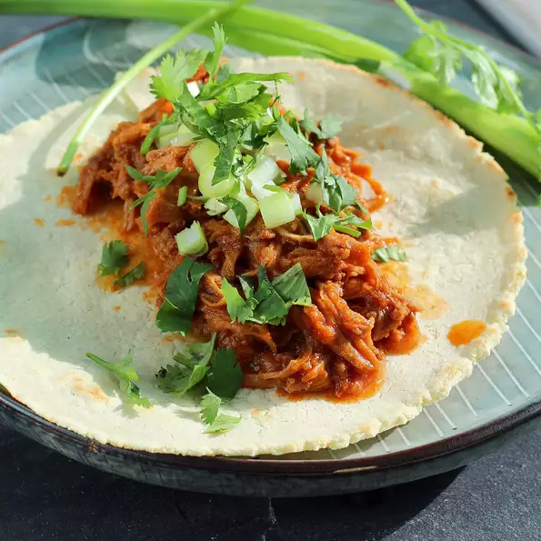

Barbacoa Recipe

DESCRIPTION
This recipe for Instant Pot® barbacoa is lightly spicy and extremely easy!
Serve meat on freshly made corn tortillas with pickled onions and cilantro.
INGREDIENTS
- 3 dried guajillo chile peppers
- 3 dried pasilla chile peppers
- 1 (4 pound) beef chuck roast, cut into 2-inch pieces
- salt and ground black pepper to taste
STEPS
- Place chile peppers in a large bowl and cover with hot water. Soak until soft, about 20 minutes. Drain.
- Heat a large skillet over medium heat. Add chuck roast and season with salt and pepper. Cook meat until dark brown and crispy on all sides, 7 to 10 minutes.
- While meat cooks, combine softened chile peppers, onion, vinegar, garlic, lime juice, cumin, oregano, agave nectar, and cinnamon in a blender. Process sauce until smooth.
- Transfer browned meat and all juices to a multi-functional pressure cooker (such as Instant Pot®). Stir in sauce from the blender. Close and lock the lid. Select high pressure according to manufacturer's instructions; set timer for 60 minutes. Allow 10 to 15 minutes for pressure to build.
Back